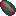

Позаземна фауна
Позаземна фауна
Космос — це домівка для багатьох видів тварин, відмінних від тих, що мешкають на Землі. Деякі з них агресивні й атакують гравця, але більшість — пасивні. Лише небагато з них можна приручити, як свійських тварин на Землі.
Тварин, яких ви знайдете в інших світах, можна поділити на дві категорії: гарячі та холодні. Вони можуть вижити лише на планетах із подібним кліматом до їхнього рідного, або на помірних планетах, як-от Земля.
Космічні тварини не потребують кисневого середовища, але його наявність зробить територію «помірною» для їх виживання. Наприклад, якщо ви перенесете холодолюбну тварину (таку як Нюхач) на гарячу планету (наприклад, Венеру), вона загориться, якщо не буде в кисневому середовищі.
Це робить Землю ідеальним місцем для створення зоопарку, якщо вам цікаво.
Тварин можна транспортувати між планетами за допомогою системи AE2 Spatial Storage.
Місяць може бути досить пустельним, але там все ж є кілька тварин, які вважають його домом.
Він вважається холодним світом, незважаючи на досить екстремальні коливання температури.
Місячний кролик
Окрім забарвлення, місячні кролики мають ідентичні характеристики до земних кроликів. Вони також їдять плід хору.
Лімпет
Лімпети — це різновид равликів, на панцирі яких є руда. Її можна добути будь-яким інструментом для копання. Вони пасивні та їстівні.
Зоряний повзун
Зоряні повзуни — це різновид морських зірок. Вони агресивні та їстівні.
Бірт
Бірти — це різновид птахів. Вони відкладають яйця у гніздах, пасивні, якщо їх не атакувати, і їстівні. Їхні яйця можна кидати, щоб оглушити цілі.
Марс — це планета з середовищем, найбільш наближеним до земного, з великою різноманітністю тварин для взаємодії та рослин для їхнього (і вашого) харчування... за винятком величезної пустелі, де майже нічого не живе.
Марс — це холодна планета.
Піщаний хробак

Піщані хробаки реагують на кроки гравця. Саме через них у пустелі майже нічого не живе.
Нюхачі
Нюхачі — це приручувані тварини, яких можна знайти при температурі від -30 до -102°C. Вони потребують Великого Гнізда для відкладання яєць і можуть бути остриженими для отримання пучків нюхача. Їхні яйця можна приготувати або використати для добування вершків. Вони їдять будь-які марсіанські культури.
Нюхач.
Враптори
Враптори — це приручувані тварини, яких можна знайти при температурі від -15 до -100°C. Вони потребують Великого Гнізда для відкладання яєць і можуть бути остриженими для отримання пір’я враптора. Їхні яйця можна приготувати або використати для добування врапторового цукру. Вони їдять будь-які марсіанські культури.
Враптор.
Глаціанська вівця
Гляціальні вівці — це приручувані тварини, які надають перевагу надзвичайно холодному середовищу нижче -108°C. Їх можна стригти для отримання гляціальної вовни, чудового ізоляційного матеріалу. Вони їдять будь-які марсіанські культури.
Гляціальний баран/вівця.
Серфер
Серфери — це напівводні пасивні тварини. Їх можна приручити за допомогою сирої риби, щоб кататися на них під водою. Вони також їстівні.
Пожирач
Пожирачі — це агресивні тварини та одні з найнебезпечніших хижаків, яких можна знайти при температурі вище -109°C. Якщо вам вдасться їх здолати, їх можна з’їсти.
Хрумкач
Хрумкачі — це територіальні хижаки та мінібоси. Щоб зупинити їхню регенерацію, годуйте їх м’ясом. Їх також можна з’їсти.
Паритель
Парителі — це мирні тварини, яких можна зустріти вище -106 °C. Їх можна приручити за допомогою Сирої риби, щоб використовувати як летючого скакуна. Їх також можна вживати в їжу.
Планер
Планери всупереч своїй назві не піддаються прирученню й не придатні для верхової їзди. Вони є мирними істотами та мешкають у зонах вище -105 °C. Планери полюбляють музику й можуть бути використані як їжа.
Руйнівник
Руйнівники — це напівворожі тварини, яких можна зустріти стадами в зонах вище -100 °C. Їх можна вбити заради м’яса та твердих шипів.
Спрінглінг
Спрінглінги — це дикі тварини, яких можна зустріти вище -108 °C. Якщо погодувати їх Саджанцями, ви зможете осідлати їх і подовжити їхні надзвичайно довгі шиї. Їх також можна вживати в їжу.
Губер
Губери — це ліниві дикі тварини, яких можна зустріти вище -109 °C. Вони є мирними істотами й можуть бути використані як їжа.
Ходуни
Гіганські Ходуни мешкають у зонах вище -97 °C. Вони є мирними істотами й можуть бути використані як їжа.
Токслакант
Токслаканти — це водні тварини-жертви. Рекомендується вбивати їх здалеку та готувати їхнє м’ясо перед вживанням.
Стакастік
Одні з небагатьох тварин, здатних вижити в марсіанській пустелі, Стакастіки є мирними тваринами-жертвами. Їх також можна вживати в їжу.